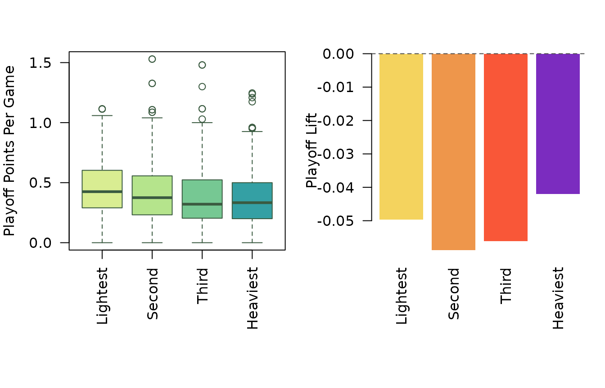

Do Bigger Skaters Hold Their Scoring in the Playoffs?
Source:vignettes/playoff-size.Rmd
playoff-size.RmdOverview
Playoff hockey has a stubborn stereotype: once the checking tightens,
skill supposedly gives way to mass. Bigger skaters are assumed to
survive the grind better, win more net-front battles, and keep producing
when series turn meaner. That story sounds plausible, but it bundles two
different ideas together. The first is about absolute playoff
scoring: do heavier skaters actually score more? The second is
about playoff translation: even if bigger players do
not outscore smaller ones outright, do they lose less offense
when the regular season gives way to the postseason? This example
tackles both questions at once. We combine
nhlscraper::skater_playoff_statistics(),
nhlscraper::skater_statistics(), and
nhlscraper::players() to build a salary-cap-era sample of
skaters with meaningful regular-season and playoff workloads. From
there, we compare regular-season points per game, playoff points per
game, and the gap between them.
Build Analysis Table
We want one row per player with career regular-season scoring, career playoff scoring, and basic biometrics.
# Pull playoff, regular-season, and biometric records.
playoff_stats <- nhlscraper::skater_playoff_statistics()
career_stats <- nhlscraper::skater_statistics()[, c(
'playerId',
'rsGamesPlayed',
'rsPoints',
'positionCode'
)]
player_bios <- nhlscraper::players()[, c(
'playerId',
'playerFullName',
'height',
'weight'
)]
# Join player-level tables.
analysis_tbl <- merge(
playoff_stats,
career_stats,
by = c('playerId', 'positionCode'),
all.x = TRUE
)
analysis_tbl <- merge(
analysis_tbl,
player_bios,
by = 'playerId',
all.x = TRUE
)
# Keep salary-cap skaters with meaningful samples.
analysis_tbl <- analysis_tbl[
!is.na(analysis_tbl[['height']]) &
!is.na(analysis_tbl[['weight']]) &
analysis_tbl[['firstSeasonForGameType']] >= 20052006 &
analysis_tbl[['gamesPlayed']] >= 20 &
analysis_tbl[['rsGamesPlayed']] >= 200,
]
# Fill missing names and compute scoring rates.
analysis_tbl[['playerFullName']] <- ifelse(
is.na(analysis_tbl[['playerFullName']]) |
analysis_tbl[['playerFullName']] == '',
paste(
analysis_tbl[['skaterFirstName']],
analysis_tbl[['skaterLastName']]
),
analysis_tbl[['playerFullName']]
)
analysis_tbl[['regularPPG']] <-
analysis_tbl[['rsPoints']] / analysis_tbl[['rsGamesPlayed']]
analysis_tbl[['playoffPPG']] <-
analysis_tbl[['points']] / analysis_tbl[['gamesPlayed']]
analysis_tbl[['playoffLift']] <-
analysis_tbl[['playoffPPG']] - analysis_tbl[['regularPPG']]
analysis_tbl[['positionBucket']] <- ifelse(
analysis_tbl[['positionCode']] == 'D',
'Defense',
'Forward'
)
# Assign equal-count weight quartiles.
weight_share <- rank(
analysis_tbl[['weight']],
ties.method = 'first'
) / nrow(analysis_tbl)
analysis_tbl[['weightQuartile']] <- cut(
weight_share,
breaks = c(0, 0.25, 0.50, 0.75, 1),
include.lowest = TRUE,
labels = c('Lightest', 'Second', 'Third', 'Heaviest')
)
nrow(analysis_tbl)
#> [1] 1680That leaves 1680 modern skaters. The sample is large enough to smooth away one-hot playoff runs, but still focused enough to keep the comparison about contemporary hockey. To make the shape of the data concrete, it helps to peek at a few of the strongest playoff scorers in the sample.
# Show sample of strongest playoff scorers.
sample_tbl <- analysis_tbl[
order(-analysis_tbl[['playoffPPG']], -analysis_tbl[['gamesPlayed']]),
c(
'playerFullName',
'positionCode',
'weight',
'rsGamesPlayed',
'gamesPlayed',
'regularPPG',
'playoffPPG',
'playoffLift'
)
]
sample_tbl <- utils::head(sample_tbl, 8)
make_table(
sample_tbl,
caption = 'Top playoff scoring rates among skaters in the working sample.'
)| playerFullName | positionCode | weight | rsGamesPlayed | gamesPlayed | regularPPG | playoffPPG | playoffLift | |
|---|---|---|---|---|---|---|---|---|
| 12088 | Connor McDavid | C | 194 | 777 | 96 | 1.534 | 1.562 | 0.028 |
| 12089 | Connor McDavid | C | 194 | 777 | 96 | 1.534 | 1.562 | 0.028 |
| 11907 | Leon Draisaitl | C | 209 | 852 | 96 | 1.232 | 1.469 | 0.236 |
| 11908 | Leon Draisaitl | C | 209 | 852 | 96 | 1.232 | 1.469 | 0.236 |
| 11792 | Nathan MacKinnon | C | 200 | 932 | 95 | 1.201 | 1.316 | 0.115 |
| 11793 | Nathan MacKinnon | C | 200 | 932 | 95 | 1.201 | 1.316 | 0.115 |
| 8431 | Marian Hossa | R | 207 | 1309 | 20 | 0.866 | 1.300 | 0.434 |
| 12106 | Mikko Rantanen | R | 228 | 706 | 81 | 1.096 | 1.247 | 0.151 |
Compare Weight Quartiles
Now we can step back from individual names and ask the population question. If heavier skaters really become more dangerous in the playoffs, the heaviest quartile should sit clearly above the lighter groups in playoff scoring rate, or at least show a meaningfully smaller drop from regular-season scoring.
# Summarize scoring levels and playoff lift by quartile.
quartile_summary <- aggregate(
cbind(regularPPG, playoffPPG, playoffLift) ~ weightQuartile,
data = analysis_tbl,
FUN = mean
)
quartile_counts <- as.data.frame(table(analysis_tbl[['weightQuartile']]))
names(quartile_counts) <- c('weightQuartile', 'n')
quartile_summary <- merge(
quartile_summary,
quartile_counts,
by = 'weightQuartile'
)
quartile_summary <- quartile_summary[
match(levels(analysis_tbl[['weightQuartile']]), quartile_summary[['weightQuartile']]),
c('weightQuartile', 'n', 'regularPPG', 'playoffPPG', 'playoffLift')
]
make_table(
quartile_summary,
caption = 'Regular-season scoring, playoff scoring, and playoff lift by weight quartile.'
)| weightQuartile | n | regularPPG | playoffPPG | playoffLift | |
|---|---|---|---|---|---|
| 2 | Lightest | 420 | 0.511 | 0.461 | -0.050 |
| 3 | Second | 420 | 0.475 | 0.416 | -0.059 |
| 4 | Third | 420 | 0.437 | 0.380 | -0.057 |
| 1 | Heaviest | 420 | 0.418 | 0.378 | -0.040 |
This is where the cliché starts to wobble. The lightest quartile posts the strongest playoff scoring rate in the sample at about 0.461 points per game, while the heaviest quartile sits at about 0.378. But the second question is more subtle. The heaviest skaters do not lead in raw playoff scoring, yet they also show the smallest drop from their own regular-season baseline. Their average playoff lift is about -0.040, compared with -0.050 for the lightest group. That is a more interesting result than a simple yes-or-no size verdict. Bigger skaters are not the most productive playoff scorers on average, but they may lose slightly less offense when conditions tighten.
Visualize Level Versus Translation
A table gives the means. A plot shows whether those means reflect broad tendencies or just a few stars.
# Plot playoff scoring distribution and average lift.
old_par <- graphics::par(no.readonly = TRUE)
graphics::par(mfrow = c(1, 2), mar = c(8, 4, 3, 1))
graphics::boxplot(
playoffPPG ~ weightQuartile,
data = analysis_tbl,
col = c('#d9ed92', '#b5e48c', '#76c893', '#34a0a4'),
border = '#3a5a40',
las = 2,
ylab = 'Playoff Points Per Game',
xlab = ''
)
graphics::barplot(
quartile_summary[['playoffLift']],
names.arg = quartile_summary[['weightQuartile']],
col = c('#f4d35e', '#ee964b', '#f95738', '#7b2cbf'),
border = NA,
las = 2,
ylab = 'Playoff Lift',
xlab = ''
)
graphics::abline(h = 0, lty = 2, col = '#4d4d4d')
Playoff scoring level and playoff lift by weight quartile.
graphics::par(old_par)The left panel reinforces the first point: heavier groups do not shift upward as playoff scorers. The right panel reinforces the second: every group scores less in the playoffs than in the regular season on average, but the drop is a little shallower for the heaviest skaters. That combination makes intuitive hockey sense. Many larger players are not offense-first stars, so their absolute scoring rates start lower. But their game may translate a bit more cleanly into playoff conditions than the regular-season scoring records alone suggest.
See Who Gains Most
One way to make the translation question feel real is to look at the players with the biggest positive playoff bump.
# Show largest positive playoff lifts among larger-sample skaters.
risers_tbl <- analysis_tbl[
analysis_tbl[['gamesPlayed']] >= 40,
c(
'playerFullName',
'positionBucket',
'weight',
'regularPPG',
'playoffPPG',
'playoffLift'
)
]
risers_tbl <- risers_tbl[order(-risers_tbl[['playoffLift']]), ]
risers_tbl <- utils::head(risers_tbl, 10)
make_table(
risers_tbl,
caption = 'Largest playoff scoring lifts among skaters with at least 40 playoff games.'
)| playerFullName | positionBucket | weight | regularPPG | playoffPPG | playoffLift | |
|---|---|---|---|---|---|---|
| 8218 | Daniel Brière | Forward | 174 | 0.715 | 1.059 | 0.344 |
| 12588 | Evan Bouchard | Defense | 192 | 0.760 | 1.080 | 0.320 |
| 12589 | Evan Bouchard | Defense | 192 | 0.760 | 1.080 | 0.320 |
| 11780 | Artturi Lehkonen | Forward | 179 | 0.508 | 0.778 | 0.269 |
| 10817 | Jakob Silfverberg | Forward | 207 | 0.455 | 0.719 | 0.264 |
| 11910 | Sam Bennett | Forward | 193 | 0.510 | 0.766 | 0.256 |
| 11907 | Leon Draisaitl | Forward | 209 | 1.232 | 1.469 | 0.236 |
| 11908 | Leon Draisaitl | Forward | 209 | 1.232 | 1.469 | 0.236 |
| 12202 | Evan Rodrigues | Forward | 182 | 0.438 | 0.672 | 0.234 |
| 10805 | Ryan O’Reilly | Forward | 207 | 0.728 | 0.961 | 0.232 |
This table also hints at an important caveat: some of the best playoff translators are defensemen. That matters because defense is a position where the scoring baseline is lower to begin with. A small absolute scoring gain there can look like a meaningful playoff bump.
Fit Simple Model
To separate size from position a little more directly, we can fit a simple model with playoff lift as the response and height, weight, and a defense indicator as predictors.
# Fit simple playoff-lift model.
lift_fit <- stats::lm(
playoffLift ~ height + weight + I(positionCode == 'D'),
data = analysis_tbl
)
lift_fit_tbl <- as.data.frame(summary(lift_fit)$coefficients)
lift_fit_tbl[['term']] <- rownames(lift_fit_tbl)
rownames(lift_fit_tbl) <- NULL
lift_fit_tbl[['term']] <- c(
'Intercept',
'Height',
'Weight',
'Defense indicator'
)
lift_fit_tbl <- lift_fit_tbl[, c(
'term',
'Estimate',
'Std. Error',
't value',
'Pr(>|t|)'
)]
make_table(
lift_fit_tbl,
caption = 'Linear model of playoff scoring lift on height, weight, and position.',
digits = 4
)| term | Estimate | Std. Error | t value | Pr(>|t|) |
|---|---|---|---|---|
| Intercept | -0.0107 | 0.1218 | -0.0881 | 0.9298 |
| Height | -0.0013 | 0.0021 | -0.6231 | 0.5333 |
| Weight | 0.0002 | 0.0003 | 0.7829 | 0.4338 |
| Defense indicator | 0.0303 | 0.0068 | 4.4473 | 0.0000 |
In this specification, neither height nor weight carries a strong standalone slope once position is accounted for. The cleanest signal is positional: defensemen, on average, lose less scoring in the playoffs than forwards do. That does not mean size is irrelevant. It means the popular claim that bigger skaters as such become better playoff scorers is too blunt. Role and position explain more than a simple bigger-is-better story.
What We Learned
The modern playoff-size cliché is only half right. Bigger skaters do
not post the best playoff scoring rates on average. The
lightest quartile still scores more. But bigger skaters also do
not collapse when the postseason starts; if anything,
their scoring translates a bit more cleanly relative to regular-season
expectations. That is a useful lesson for exploratory work with
nhlscraper: the most interesting answer is often a split
answer. A single workflow can move from headline myth, to player-level
table, to population comparison, to a more careful interpretation of
what the data really say.